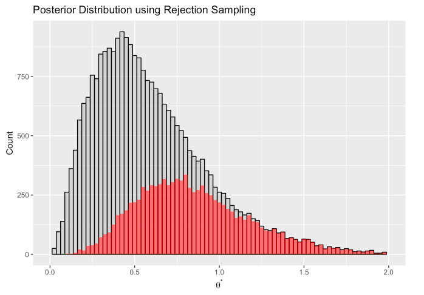
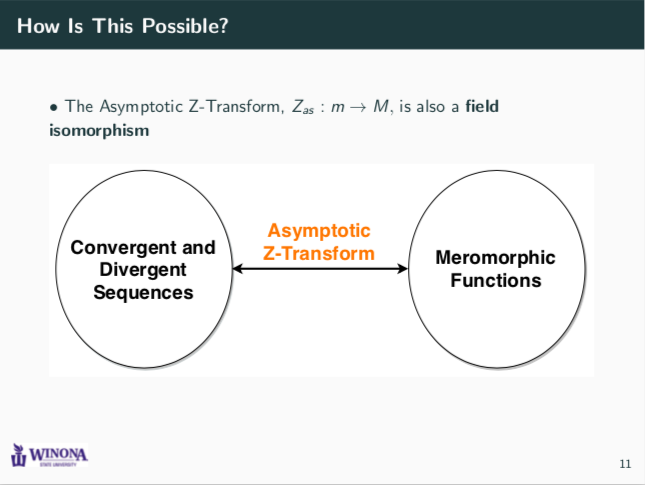
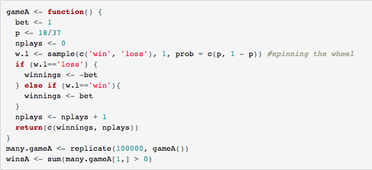

Logistic Regression Project - Fall 2018
 The purpose of this project was to perform binary classification on two different datasets. For a full
project description, click here; if you would like to run the code yourself,
click here. This project was completed using MATLAB
and LaTeX.
The purpose of this project was to perform binary classification on two different datasets. For a full
project description, click here; if you would like to run the code yourself,
click here. This project was completed using MATLAB
and LaTeX.
Mathematical Statistics Final Project - Spring 2018

This was my final project for my
"Principles of Mathematical Statistics" course. Here, I answered a qualifying examination question on Mathematical
Statistics and then used Bayesian computational methods to answer questions regarding asthma deaths. This
project was completed using R.
Undergraduate Research Presentation - Spring 2018

My senior capstone experience at Winona State University required an independpent project. I chose to investigate the
mathematical properties of the Z-Transform and its applications to signal processing and computations.
These slides are from the presentation I gave at the St. John's Pi Mu Epsilon Conference.
This project was done with LaTeX/Beamer. A technical document was also created for this project;
it can be found here. This document contains some
Mathematica codes for performing computations involving sequences.
Roulette Betting Styles - Fall 2017

Have you ever wondered what the best play style is for the game roulette? Well, in this project, I compared
several different betting styles through the use of a simulation study. The results are then compared in a table.
This project was completed using R.